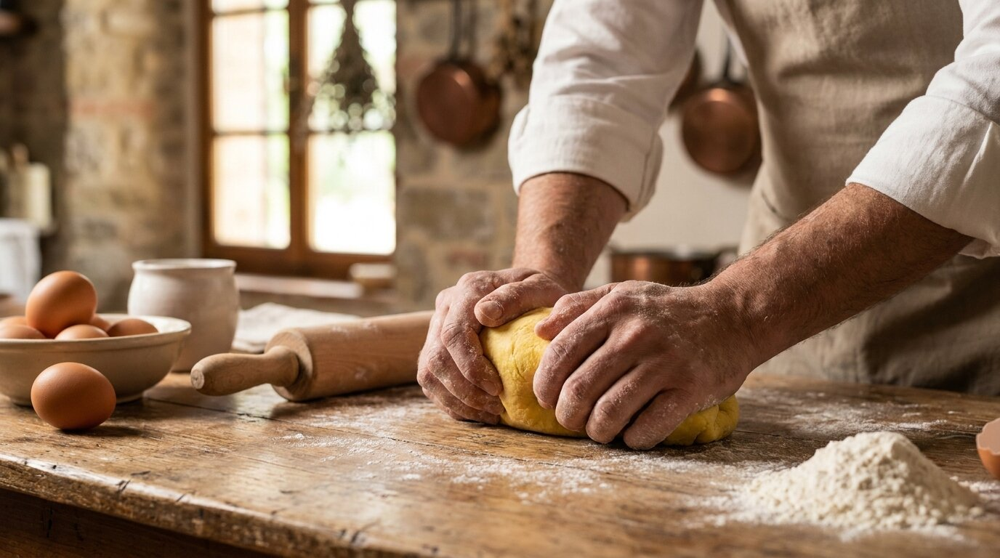
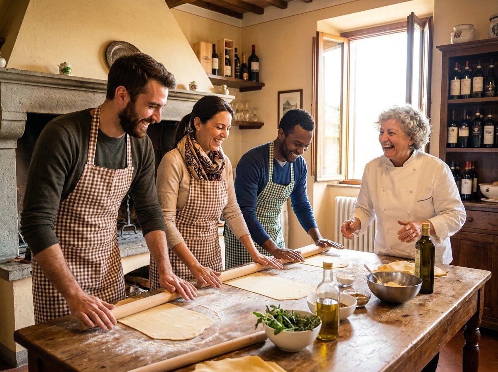
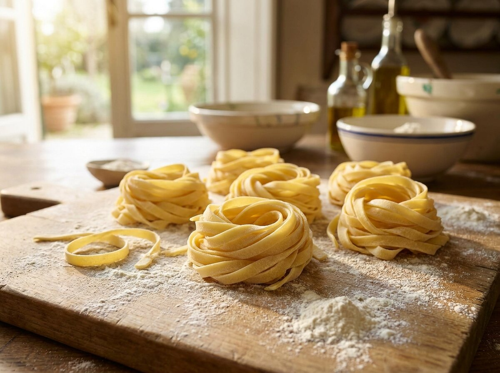
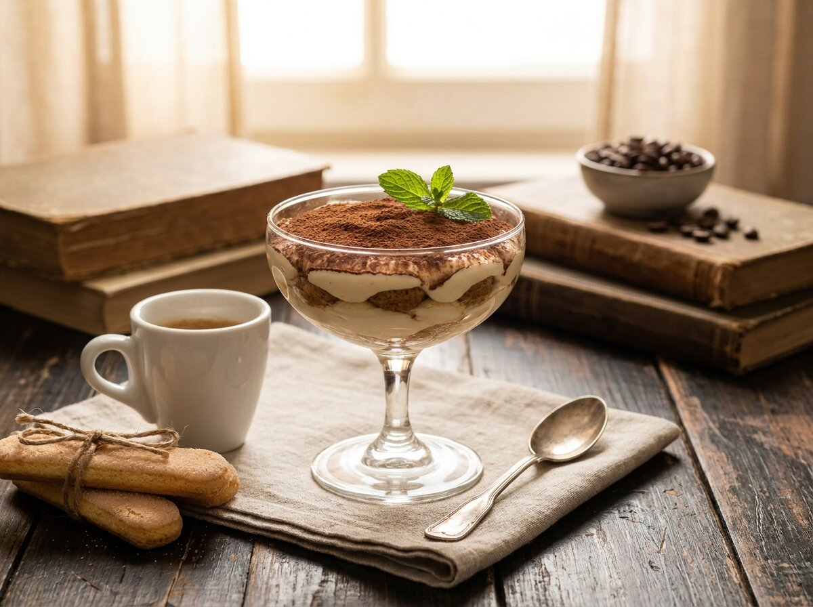
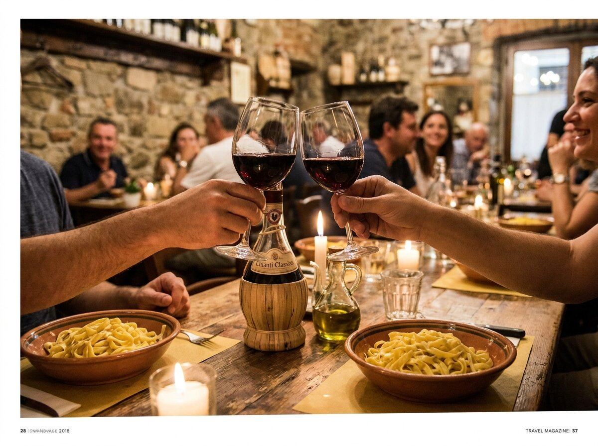
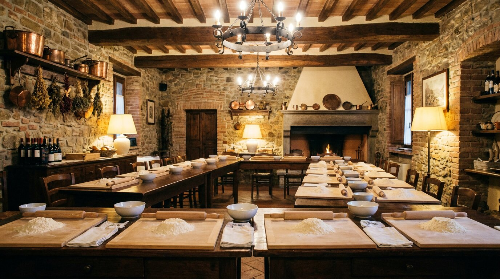

Morning Class
10:30
€69
per person
Start the day the Tuscan way: pasta, tiramisù and a well-earned late-morning feast with local wine.
Book 10:30
Learn the art of fresh handmade pasta and authentic tiramisù with an expert Italian chef — then feast on everything you make, with unlimited local Tuscan wine.
At Ristorante Le Corniole, we open our kitchen to travelers and food lovers who want to discover the secrets of traditional Tuscan home cooking. Aprons on, hands in the flour: you'll roll, knead and taste your way through an unforgettable morning, lunch or evening in Arezzo — one of Tuscany's most beautiful and authentic cities, just 30 minutes from Cortona and about an hour from Florence, Siena and Perugia.

From the welcome coffee to the last spoonful of tiramisù — here is how your Tuscan cooking class unfolds.
Arrive at Ristorante Le Corniole, meet your chef, enjoy a welcome coffee and put on your apron. The moment it's tied, the fun begins.
Flour, fresh eggs and skilled hands: learn to mix, knead, roll and shape fresh pasta exactly as Tuscan grandmothers have done for generations. The chef demonstrates, you recreate — with plenty of laughs along the way.
Master Italy's most beloved dessert: real mascarpone cream, espresso-soaked savoiardi and a generous dusting of cocoa. You'll take the technique home with you.
Sit down and enjoy a full meal of the dishes you prepared, paired with unlimited local Tuscan wines — the most delicious reward there is.
Leave with detailed recipes so you can recreate the magic of Tuscany in your own kitchen, plus memories (and photos!) to last a lifetime.
Classes run Tuesday to Friday and on Sundays (prior booking required). Every class includes the same full hands-on experience.
10:30
€69
per person
Start the day the Tuscan way: pasta, tiramisù and a well-earned late-morning feast with local wine.
Book 10:3013:00
€79
per person
Cook through the early afternoon and sit down to a glorious Tuscan lunch of your own creations.
Book 13:0017:30
€89
per person
Golden-hour cooking followed by dinner with your handmade pasta, tiramisù and free-flowing wine.
Book 17:30



Travelers from the USA, UK, Australia, Germany, Spain, the Netherlands, Switzerland and beyond have shared unforgettable moments in our kitchen.
"My daughter and I had such a lovely, memorable morning. We learned how to make pasta and tiramisu the traditional Tuscan way, using the freshest ingredients… paired with wonderful local wines. A fantastic way to spend time in beautiful Arezzo."Tracey United Kingdom
"It was fantastic. We could tell it would be fun the second they handed us our aprons. The staff is friendly, the instructions are great, and the house wine is excellent. The restaurant is walking distance from the Arezzo terminal. I would do it again without hesitation."Kathleen USA
"This was a wonderful activity, best day of my travelling experience. The host and chef were wonderful, informative and friendly. Meeting people from all kinds of countries to share cooking, eating and good wine."Louise Australia
"Wir hatten einen sehr tollen Pasta- und Tiramisukurs in Arezzo. Die Atmosphäre war herzlich mit hilfreichen Erklärungen auf Englisch oder Italienisch. Sehr empfehlenswert!"
Melina Germany
"Disfrutamos de una experiencia fantástica aprendiendo a hacer pasta fresca y tiramisú. Antonella, la cocinera, nos atendió con una cercanía y amabilidad que hicieron que la actividad fuera aún más especial, como si estuviéramos en casa."
Elisa Spain
"Erg leuk! Antonella, de enige echte pasta-maakster, en Barbara hebben ons de fijne kneepjes van verse pasta en tiramisu maken aangeleerd. Ze waren beiden heel aardig en behulpzaam."
Kevin Netherlands
You'll learn to make fresh handmade pasta and authentic Italian tiramisù the traditional Tuscan way, guided step by step by an expert chef. At the end, you'll enjoy a full meal of everything you prepared, with unlimited local Tuscan wines.
Not at all! The class is designed for everyone — complete beginners, families, couples and groups. Classes are kept small so the chef can give everyone personalized attention.
From Tuesday to Friday and on Sundays, with three time slots: 10:30 (€69), 13:00 (€79) and 17:30 (€89). Prior booking is required.
Yes, happily — just let us know about any dietary requirements when you book.
English and Italian, with warm, clear, step-by-step explanations.
Ristorante Le Corniole is at Viale Michelangelo 142, Arezzo — within walking distance of the Arezzo train station, with plenty of parking nearby. Arezzo is about 30 minutes from Cortona and roughly an hour from Florence, Siena and Perugia, making it a perfect stop on any Tuscan itinerary.
Call us at +39 0575 1913733, message us on WhatsApp (+39 377 5761141), or email ristorantelecorniole@gmail.com. Booking in advance is required.
Spots fill quickly — classes are intentionally small. Reserve your apron today and take home the true taste of Tuscany.
Book Your Cooking Class